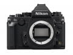
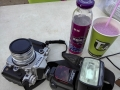
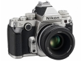
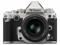
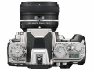
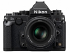
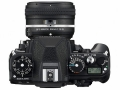
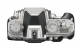
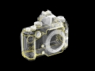

器材库 > 35mm画幅可换镜头数码相机 > Df

规格总览
产品类型
35mm画幅可换镜头数码相机
发布日期
2013-11-05
厂家推荐价格
280,000.00 （日元）
影像规格
影像传感器
CMOS
影像传感器尺寸
http://info.xitek.com/newproduct/dslr/201311/05-137633_2.html
总像素
1661万
有效像素
1625万
影像处理器
EXPEED 3
最大解像度
4928 × 3280
静态图像格式
JPEG, TIFF, RAW, RAW+JPEG
静态图像尺寸
4,928 × 3,280 [L], 3,696 × 2,456 [M], 2,464 × 1,640 [S] DX格式（24 × 16）： 3,200 × 2,128 [L], 2,400 × 1,592 [M], 1,600 × 1,064 [S]
除尘系统
清洁图像传感器、图像除尘参考数据（需要另购的Capture NX2 软件）
镜头和对焦
镜头卡口
Nikon AF, Nikon F
兼容镜头
兼容AF 尼克尔镜头，包括G 型、E 型和D 型镜头（PC 镜头存在某些限制）、DX 镜头（使用DX 24×16 1.5x 图像区域）、AI-P 尼克尔镜头以及非CPU 镜头不能使用IX 尼克尔
对焦系统类型
Multi-CAM 4800DX 自动对焦模块具备TTL 相位侦测
对焦点
可从39 或11 个对焦点中选择
对焦模式
自动对焦(AF) ：单次伺服AF(AF-S) ；连续伺服AF(AF-C) ；根据拍摄对象的状态自动启用的预测对焦跟踪 • 手动对焦(M) ：可以使用电子测距仪
手动对焦
支持
曝光控制
测光系统
2,016 像素RGB 传感器的TTL 曝光测光
测光模式
中央重点测光, 多分区评价测光, 点测光
测光范围
矩阵或中央重点测光： 0 至20 EVEV~点测光： 2 至20 EVEV
曝光模式
P（程序自动曝光）, A（光圈优先自动曝光）, S（快门速度优先自动曝光）, M（手动测光曝光）
快门类型
电子控制，纵走式，焦平面快门
快门速度
1/4000-30 秒（以1/3为步长进行微调）、B 门、X200
曝光补偿
±3EV以1/3或1/2或1EV级调整
自动曝光锁
有
自动包围曝光
拍摄2 至5 幅，以1/3、2/3、1、2 或3EV 为步长进行微调
ISO感光度
可扩展至50, 102400, 204800, ISO100 – 12800
白平衡
白炽灯, 闪光灯, 阴天, 荧光灯, 荧光灯H, 阴影, 自动, 手动白平衡, 晴天, 荧光灯L, 荧光灯（冷白色）, 荧光灯（日光白色）, 荧光灯（日光）, 荧光灯（暖白色）
自拍
10秒, 2秒, 20秒, 以0.5、1、2 或3 秒为间隔曝光1~9 次
连拍
约1 至5 幅/ 秒(CL) 或5.5 幅/ 秒(CH)
闪光灯
内置闪光灯
无
闪光补偿
±3EV以-3 至 +1 EVEV级调整
闪光同步模式
前帘同步, 后帘同步, 慢速同步, 防红眼慢速同步
外接闪光灯
SB-910、SB-900、SB-800、SB-700、SB-600、SB-400 或SB-300
PC端子
有
取景器/显示屏
取景器
五棱镜取景器
取景范围
100%
取景放大倍率
0.7倍
屈光度调节范围
-3 至 +1m-1
反光镜
自动返回式防震降噪反光镜
景深预视
有
LCD类型
VGA LCD
LCD尺寸
3.2英寸
LCD像素
92.1万
视野率
100%
Live View
有
文件输入/输出
存储卡
SD/SDHC, SDXC
数据接口
高速USB
视频/音频接口
HDMI Mini 输出
电源
电池
EN-EL14a 锂离子可充电电池
外接电源
EH-5b 电源适配器；需要EP-5A 照相机电源连接器（另购）
机身规格
颜色
黑色, 银/黑色
尺寸
143.5 × 110 × 66.5mm
重量
710g
凌河渔翁2017-03-26 07:064.56 分
操作性 4.50功能性 4.50美观性 5.00趣味性 5.00耐用性 4.50性价比 3.50解像力 4.50色彩还原 5.00
iii7496312017-01-09 00:59
散客2016-09-29 23:484.63 分
操作性 4.50功能性 4.50美观性 5.00趣味性 4.50耐用性 4.50性价比 4.50解像力 4.50色彩还原 5.00
在你的回忆中2015-11-02 20:254.94 分
操作性 5.00功能性 4.50美观性 5.00趣味性 5.00耐用性 5.00性价比 5.00解像力 5.00色彩还原 5.00
桂林九段2015-05-23 14:484.75 分
操作性 5.00功能性 4.00美观性 5.00趣味性 5.00耐用性 5.00性价比 4.00解像力 5.00色彩还原 5.00
月落西山2015-05-06 00:185 分
操作性 5.00功能性 5.00美观性 5.00趣味性 5.00耐用性 5.00性价比 5.00解像力 5.00色彩还原 5.00
绯色星云2015-04-11 12:024.44 分
操作性 5.00功能性 4.50美观性 4.50趣味性 5.00耐用性 4.00性价比 4.00解像力 4.50色彩还原 4.00
谷桦2015-04-04 14:594.88 分
操作性 5.00功能性 5.00美观性 5.00趣味性 4.50耐用性 5.00性价比 4.50解像力 5.00色彩还原 5.00
谷桦2015-04-04 14:50
色国天堂2015-03-11 10:224.75 分
操作性 5.00功能性 4.50美观性 5.00趣味性 5.00耐用性 4.50性价比 4.00解像力 5.00色彩还原 5.00
zqzyb2015-03-10 15:574.56 分
操作性 4.50功能性 4.50美观性 5.00趣味性 5.00耐用性 4.50性价比 3.50解像力 4.50色彩还原 5.00
石头书生2015-02-04 17:285 分
操作性 5.00功能性 5.00美观性 5.00趣味性 5.00耐用性 5.00性价比 5.00解像力 5.00色彩还原 5.00
石头书生2015-02-04 17:25
jkai03302015-02-02 13:535 分
操作性 5.00功能性 5.00美观性 5.00趣味性 5.00耐用性 5.00性价比 5.00解像力 5.00色彩还原 5.00
色无缺影2014-09-03 14:554.44 分
操作性 4.50功能性 4.00美观性 5.00趣味性 4.50耐用性 4.50性价比 4.00解像力 4.50色彩还原 4.50

闻墨2014-07-27 15:594.69 分
操作性 4.50功能性 4.50美观性 4.50趣味性 5.00耐用性 4.50性价比 4.50解像力 5.00色彩还原 5.00
色迷影迷2014-07-11 13:234.69 分
操作性 4.50功能性 4.50美观性 5.00趣味性 5.00耐用性 4.50性价比 4.00解像力 5.00色彩还原 5.00
promise3232014-07-10 11:124.88 分
操作性 5.00功能性 4.50美观性 5.00趣味性 5.00耐用性 5.00性价比 4.50解像力 5.00色彩还原 5.00
promise3232014-07-10 10:51
wzqhsx2014-07-03 17:504 分
操作性 4.00功能性 4.00美观性 4.00趣味性 4.00耐用性 4.00性价比 3.00解像力 4.50色彩还原 4.50
kuramacass2014-06-20 16:57
布衣秋叶2014-06-12 11:064.94 分
操作性 4.50功能性 5.00美观性 5.00趣味性 5.00耐用性 5.00性价比 5.00解像力 5.00色彩还原 5.00
zcf20072014-05-04 16:58
孙二官人2014-04-06 19:254 分
操作性 4.00功能性 4.00美观性 5.00趣味性 5.00耐用性 4.50性价比 2.00解像力 4.00色彩还原 3.50
js色驴2014-03-28 23:094.94 分
操作性 5.00功能性 5.00美观性 5.00趣味性 5.00耐用性 5.00性价比 4.50解像力 5.00色彩还原 5.00
aguai00302014-03-23 00:024.56 分
操作性 5.00功能性 4.50美观性 5.00趣味性 5.00耐用性 4.00性价比 3.00解像力 5.00色彩还原 5.00
阿番2014-02-14 21:574.88 分
操作性 5.00功能性 5.00美观性 5.00趣味性 5.00耐用性 5.00性价比 4.00解像力 5.00色彩还原 5.00
leiden2014-01-27 21:30
罗素2014-01-15 20:594.69 分
操作性 4.50功能性 4.50美观性 4.50趣味性 4.50耐用性 5.00性价比 4.50解像力 5.00色彩还原 5.00
acerhch2013-12-17 10:174.38 分
操作性 4.00功能性 4.00美观性 5.00趣味性 5.00耐用性 5.00性价比 2.00解像力 5.00色彩还原 5.00
alexyangyb2013-12-12 12:234.19 分
操作性 4.00功能性 3.50美观性 5.00趣味性 5.00耐用性 4.00性价比 2.50解像力 4.50色彩还原 5.00
聪明的核桃2013-12-08 21:164.88 分
操作性 5.00功能性 5.00美观性 5.00趣味性 5.00耐用性 5.00性价比 4.00解像力 5.00色彩还原 5.00
runyee2013-12-07 00:024.25 分
操作性 4.50功能性 5.00美观性 5.00趣味性 3.00耐用性 5.00性价比 2.50解像力 5.00色彩还原 4.00
一菩2013-12-04 17:434.94 分
操作性 5.00功能性 5.00美观性 5.00趣味性 5.00耐用性 5.00性价比 4.50解像力 5.00色彩还原 5.00
贺兰砺剑2013-12-02 04:244.5 分
操作性 4.00功能性 5.00美观性 5.00趣味性 5.00耐用性 5.00性价比 2.00解像力 5.00色彩还原 5.00
zhzqq0072013-11-26 16:593.94 分
操作性 4.00功能性 3.00美观性 4.50趣味性 3.50耐用性 4.50性价比 3.50解像力 4.00色彩还原 4.50
wzqhsx2013-11-25 11:26
wzqhsx2013-11-24 16:29
wzqhsx2013-11-24 15:15
wzqhsx2013-11-24 15:09
jim0079462013-11-14 08:454.44 分
操作性 5.00功能性 4.00美观性 5.00趣味性 5.00耐用性 4.50性价比 3.00解像力 4.50色彩还原 4.50
阿海AHAI2013-11-12 09:302.69 分
操作性 4.00功能性 4.00美观性 4.00趣味性 4.00耐用性 4.00性价比 0.50解像力 0.50色彩还原 0.50
大个子老王2013-11-12 08:464.13 分
操作性 4.00功能性 4.00美观性 4.50趣味性 5.00耐用性 5.00性价比 2.00解像力 4.00色彩还原 4.50
acong0072013-11-07 22:164.38 分
操作性 4.50功能性 4.00美观性 5.00趣味性 5.00耐用性 4.50性价比 3.00解像力 4.50色彩还原 4.50
leiden2013-11-07 11:10
产品图 / 样片







评测 / 相关文章
- 详细内容 （存档）
- 找回当初的感觉 尼康Df全幅单反详细评测 （存档）
- 复古设计 专注拍摄 尼康Df深度试用 （存档）
- ［试用］凝固时间的尼康Df （存档）
- ［试用］晒晒尼康DF的挂机头 （存档）
- ［试用］梦幻花卉 Df + AF Micro 105/2.8D （存档）
- ［试用］数位与底片的交会 当DF遇上了钻石广角 （存档）
- ［试用］人在旅途，Df也在旅途 （存档）
- ［试用］尼康Df的画质和色彩表现 （存档）
- ［资讯］尼康官网宣布Df供给量可能不足 （存档）
- ［试用］银色DF开箱 亮骚必须银荡 （存档）
相关文章
- ［专题］摩羯座的我 拿起这台相机的时候最爱你 （原站已下线）
- ［影像］尼康Df色彩之旅 （原站已下线）
- ［试用］寸土必争 我与尼康Df游西沙 （原站已下线）
- ［试用］怪你过分美丽 泡菜的尼康Df使用心得 （原站已下线）
- ［资讯］谁是长曝王 各家机型高ISO长曝控躁PK （存档）
- ［试用］素年锦时 无忌泡菜DF+D700泰国漫记(上) （原站已下线）
- ［试用］凝固时间的尼康Df （存档）
- ［试用］晒晒尼康DF的挂机头 （存档）
- ［试用］梦幻花卉 Df + AF Micro 105/2.8D （存档）
- ［试用］数位与底片的交会 当DF遇上了钻石广角 （存档）
- ［试用］人在旅途，Df也在旅途 （存档）
- ［试用］尼康Df的画质和色彩表现 （存档）
- ［试用］找回当初的感觉 尼康Df全幅单反详细评测 （存档）
- ［试用］复古设计 专注拍摄 尼康Df深度试用 （存档）
- ［资讯］尼康官网宣布Df供给量可能不足 （存档）
- ［试用］银色DF开箱 亮骚必须银荡 （存档）
- ［试用］无忌首台尼康复古单反DF开箱 （原站已下线）